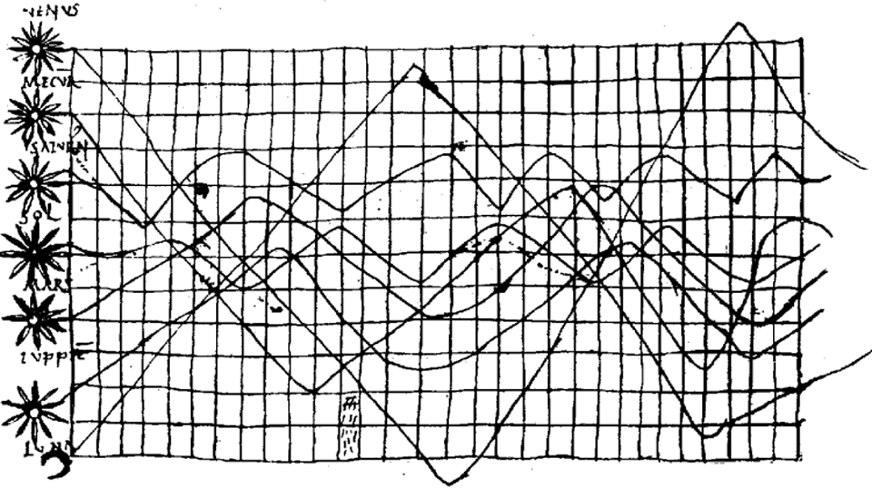
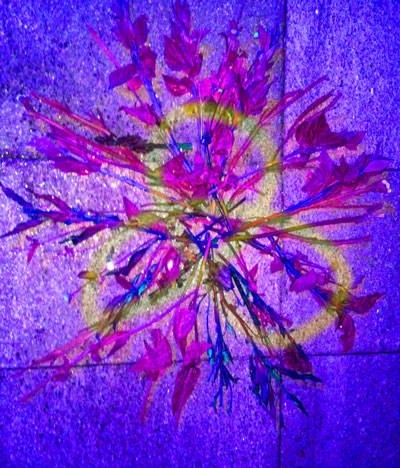

The Science
There is nothing a dolphin likes to do more on a breezy afternoon than study hard with his human friends. This graph is a chart of dolphin sounds and their corrisponding letters. Over the course of five weeks Squeeky 12 and Jasper worked with a team of Oceanic Researchers to develop a squeek to english corrilation translation. They are given special dolphin interface monitors that allow them to type at 34 WPM and interact with contemproary social media sites like FACEBOOK and Flikr.
